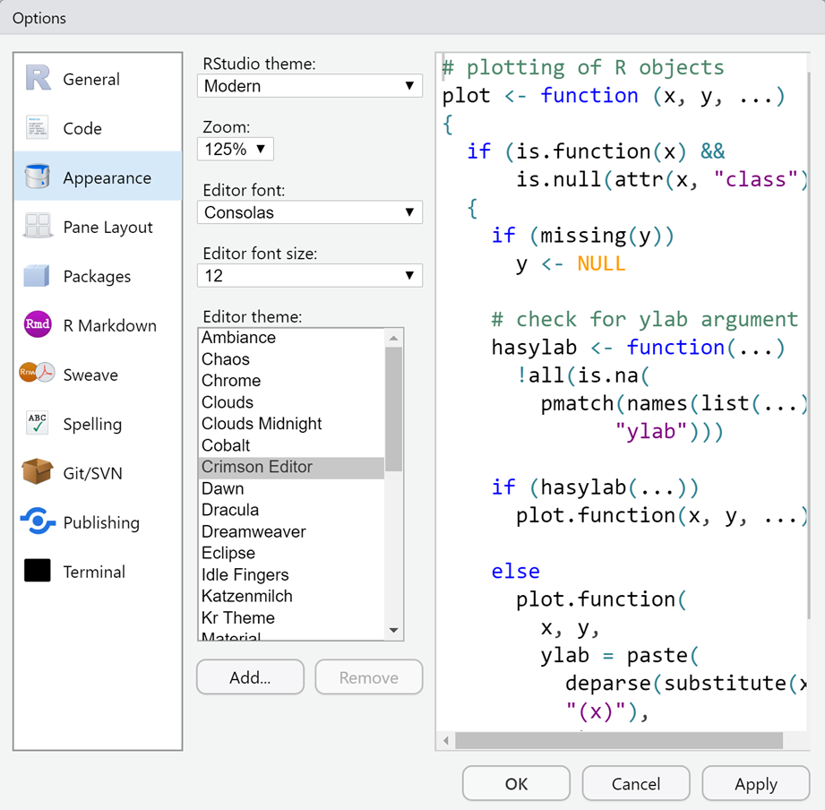

Resources
Getting Started with R
Installing R & R-Studio
To get started with using the statistical software, we first must install it! Here is a guide that was put together to help with the installation process. Throughout this guide, you will install R followed by R-Studio (a program to make R more user friendly).
We will go over this during the first day of class, so this guide is just to use as reference.
Things needed:
Computer
Internet Connection
A coffee or preferred beverage usually helps!
R: Download and Install
Information taken from “Hands-On Programming with R”
R is maintained by an international team of developers who make the language available through the web page ofThe Comprehensive R Archive Network. The top of the web page provides three links for downloading R. Follow the link that describes your operating system: Windows or Mac.
Windows
To install R on Windows, click the “Download R for Windows” link.Then click the “base” link. Next, click the first link at the top of the new page. This link should say something like “Download R 4.3.1 for Windows,” except the 4.3.1 will be replaced by the most current version of R. The link downloads an installer program, which installs the most up-to-date version of R for Windows. Run this program and step through the installation wizard that appears. The wizard will install R into your program files folders and place a shortcut in your Start menu. Note that you’ll need to have all of the appropriate administration privileges to install new software on your machine.
Mac
To install R on a Mac, click the “Download R for Mac’’ link. Next, click on the “R-4.3.1-arm64.pkg” package link (or the package link for the most current release of R that is appropriate for your computer). An installer will download to guide you through the installation process, which is very easy. The installer lets you customize your installation, but the defaults will be suitable for most users. I’ve never found a reason to change them. If your computer requires a password before installing new programs, you’ll need it here.
Using R
R isn’t a program that you can open and start using, like Microsoft Word or Internet Explorer. Instead, R is a computer language, like C, C++, or UNIX. You use R by writing commands in the R language and asking your computer to interpret them. In the old days, people ran R code in a UNIX terminal window—as if they were hackers in a movie from the 1980s. Now almost everyone uses R with an application called RStudio, and I recommend that you do, too.
Go ahead and try to open R without using R-Studio. You will get something like this:
R-Studio: Download and Install
RStudio is an application like Microsoft Word—except that instead of helping you write in English, RStudio helps you write in R. We will use RStudio throughout because it makes working with R SO much easier. Plus there are a lot of additional functionalities that RStudio has that will expand what you can do (e.g., RMarkdown). Also, the RStudio interface looks the same for the various operating systems which will make teaching and your experience with the material a lot easier.
RStudio (the company) has recently changed their name to Posit. To download RStudio, you can navigate to the Posit download page for “RStudio Desktop”. We have already completed Step 1 (you could have just come here to download it, but it is helpful to know where to get the latest versions and materials)! All you have to do is select the box under “2: Install RStudio” to download. It should recognize the operating system that you are using, but if it does not, you will just need to scroll down the page to identify the appropriate installer.
Now you are all set and ready to go! Nice job following the instructions and getting R and RStudio on your computer. Next you can begin to customize and get used to using RStudio. Remember, this is not something that is scary or a thing you can “break”. When in doubt, check out Google or reach out to the professor!
Setting things up
Here are some things that I am going to suggest to make your experience with R as good as we possibly can. Some of the suggestions here are related to your workflow while others are direct settings within R…and some are both. We are all complex creatures.
A lot of my suggestions will come from “What They Forgot to Teach You About R”. As I use other sites or things, I will do my best to have links to the original.
This list will continue to develop and expand. It is a work in progress (just like most of us)
Start R with a blank slate each time Link
Navigate to Tools > Global Options
By default, R Studio saves all of the objects in your environment. In general, this is not ideal, because it means that you may have taken steps interactively that are not documented in your code.

This would be like when you are baking, and you follow the recipe, but then you add in some cinnamon and nutmeg which the recipe doesn’t call for. You also measure out some extra chocolate chips and brown sugar, but you end up not using that. The cookies come out fantastic and you want to make them again. You open up your kitchen and the cinnamon, nutmeg, chocolate chips and brown sugar are all there, but nothing says that you need them in your recipe. We don’t want to keep all the old information. We only want what is in the recipe (after we update it to include the extra spices).
Decorate
Navigate to Tools > Global Options > Appearance
This is all yours! Take ownership and find a cool theme that you like. Make it look nice and how you want it.

Right now I am rocking the “Chaos” theme with my fonts a little larger because apparently I am getting older.